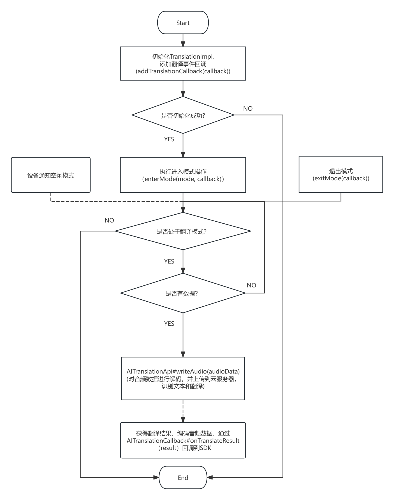

23. 翻译功能
功能实现类名: TranslationImpl
23.1. 初始化翻译功能
Important
必须先等待初始化结果回调成功，才能操作接口
23.1.1. 通过AI云翻译代理实现初始化
TranslationImpl translationImpl = null;
final RcspOpImpl rcspOp = RCSPController.getInstance().getRcspOp();
translationImpl = new TranslationImpl(rcspOp, new CustomAITranslation());
boolean isSupportTranslation = translationImpl.isSupportTranslation();
if(!isSupportTranslation){ //不支持翻译功能
translationImpl.destroy();
translationImpl = null;
return;
}
//添加翻译事件回调
translationImpl.addTranslationCallback(new TranslationCallback() {
@Override
public void onModeChange(@NonNull BluetoothDevice device, @NonNull TranslationMode mode) {
//回调翻译模式改变
}
@Override
public void onReceiveAudioData(@NonNull BluetoothDevice device, @NonNull AudioData audioData) {
//回调接收到的音频数据
}
@Override
public void onError(BluetoothDevice device, int code, String message) {
//回调错误事件
}
});
Note
推荐实现方式
自定义AI云翻译代理
public static class CustomAITranslation implements IAITranslationApi {
private AITranslationCallback translationCallback;
/**
* OPUS解码器
*/
private OpusManager opusDecoder;
/**
* OPUS编码器
*/
private OpusManager opusEncoder;
/**
* 是否正在翻译
*/
private boolean isWorking = false;
/**
* 当前翻译模式信息
*/
private TranslationMode currentMode;
@Override
public boolean isWorking() {
return isWorking;
}
@Override
public void startTranslating(@NonNull TranslationMode mode, @NonNull AITranslationCallback callback) {
//根据翻译模式信息，进行AI云翻译任务
currentMode = mode;
translationCallback = callback;
isWorking = true;
initOpusEncoder();
startOpusDecode();
}
@Override
public void stopTranslating() {
//停止翻译
destroyOpusEncoder();
stopOpusDecode();
currentMode = null;
translationCallback = null;
isWorking = false;
}
@Override
public void writeAudio(@NonNull AudioData audioData) {
//需要根据音频来源进行翻译任务
//比如：通话翻译，有上行数据 和下行数据
final TranslationMode mode = currentMode;
if (mode == null) return;
if (mode.getMode() == TranslationMode.MODE_CALL_TRANSLATION) {
if (audioData.getSource() == AudioData.SOURCE_E_SCO_UP_LINK) { //上行数据
//解码上行数据
} else if (audioData.getSource() == AudioData.SOURCE_E_SCO_DOWN_LINK) { //下行数据
//解码下行数据
}
} else {
//解码数据
}
}
private void startOpusDecode() {
if (null == opusDecoder) {
try {
opusDecoder = new OpusManager();
} catch (OpusException e) {
e.printStackTrace();
}
}
final OpusManager decoder = opusDecoder;
if (decoder != null) {
if (decoder.isDecodeStream()) {
decoder.stopDecodeStream();
}
decoder.startDecodeStream(new OnDecodeStreamCallback() {
@Override
public void onDecodeStream(byte[] bytes) {
//解码成功(流式)
//把流式的PCN数据上传的AI云端，进行语义分析和翻译
//把翻译结果，TTS音频编码成OPUS数据，再通过 AITranslationCallback#onTranslateResult(result) 回调到SDK
}
@Override
public void onStart() {
//解码开始
}
@Override
public void onComplete(String path) {
//解码结束
}
@Override
public void onError(int code, String message) {
//解码失败
}
});
}
}
private void stopOpusDecode() {
final OpusManager decoder = opusDecoder;
if (null == decoder) return;
if (decoder.isDecodeStream()) {
decoder.stopDecodeStream();
}
opusDecoder = null;
}
private void initOpusEncoder() {
if (null == opusEncoder) {
try {
opusEncoder = new OpusManager();
} catch (OpusException e) {
e.printStackTrace();
}
}
}
private void destroyOpusEncoder() {
if (null != opusDecoder) {
opusEncoder.release();
}
opusEncoder = null;
}
private void pushTranslationResult(byte[] ttsData) {
final OpusManager encoder = opusEncoder;
if (null == encoder) return;
//保存TTS数据为TTS文件，略
encoder.encodeFile(
"你的TTS文件保存路径(xxx.pcm)", //只接受PCM文件
"编码输出文件路径(xxx.opus)",
new OnEncodeStreamCallback() {
@Override
public void onEncodeStream(byte[] bytes) {
//回调编码数据(流式)
}
@Override
public void onStart() {
//回调编码开始
}
@Override
public void onComplete(String path) {
//回调编码成功
if (null == path) return;
byte[] opusData = readFileData(path);
if (opusData.length == 0) return;
//构造翻译结果数据
AudioData audioData = new AudioData(
AudioData.SOURCE_DEVICE_MIC,
Constants.AUDIO_TYPE_OPUS,
opusData
);
//通知SDK下发数据
if (null != translationCallback) {
translationCallback.onTranslateResult(
new TranslationResult()
.setId(1) //翻译任务序号
.setTranslationTTSData(audioData)
);
}
}
@Override
public void onError(int code, String message) {
//回调编码失败
}
});
}
private byte[] readFileData(String filePath) {
byte[] output = new byte[0];
try {
InputStream input = new FileInputStream(filePath);
output = new byte[input.available()];
int size = input.read(output);
input.close();
return Arrays.copyOf(output, size);
} catch (FileNotFoundException e) {
e.printStackTrace();
} catch (IOException e) {
e.printStackTrace();
}
return output;
}
}
23.1.2. 通过自定义云翻译流程初始化
TranslationImpl translationImpl = null;
final RcspOpImpl rcspOp = RCSPController.getInstance().getRcspOp();
translationImpl = new TranslationImpl(rcspOp, null);
boolean isSupportTranslation = translationImpl.isSupportTranslation();
if(!isSupportTranslation){ //不支持翻译功能
translationImpl.destroy();
translationImpl = null;
return;
}
//添加翻译事件回调
translationImpl.addTranslationCallback(new TranslationCallback() {
@Override
public void onModeChange(@NonNull BluetoothDevice device, @NonNull TranslationMode mode) {
//回调翻译模式改变
//自行处理各种模式
switch (mode.getMode()) {
case TranslationMode.MODE_IDLE: {
//空闲模式
break;
}
case TranslationMode.MODE_RECORD: {
//录音模式
break;
}
case TranslationMode.MODE_RECORDING_TRANSLATION: {
//录音翻译模式
break;
}
case TranslationMode.MODE_CALL_TRANSLATION: {
//通话翻译模式
break;
}
case TranslationMode.MODE_AUDIO_TRANSLATION: {
//音视频翻译模式
break;
}
case TranslationMode.MODE_FACE_TO_FACE_TRANSLATION: {
//面对面翻译模式
break;
}
case TranslationMode.MODE_CALL_TRANSLATION_WITH_STEREO: {
//通话翻译立体声模式
break;
}
}
}
@Override
public void onReceiveAudioData(@NonNull BluetoothDevice device, @NonNull AudioData audioData) {
//回调接收到的音频数据
final TranslationMode mode = translationImpl.getTranslationMode();
if (null == mode || mode.getMode() == TranslationMode.MODE_IDLE) return;
//自行处理各种模式
switch (mode.getMode()) {
case TranslationMode.MODE_IDLE: {
//空闲模式
break;
}
case TranslationMode.MODE_RECORD: {
//录音模式
break;
}
case TranslationMode.MODE_RECORDING_TRANSLATION: {
//录音翻译模式
break;
}
case TranslationMode.MODE_CALL_TRANSLATION: {
//通话翻译模式
break;
}
case TranslationMode.MODE_AUDIO_TRANSLATION: {
//音视频翻译模式
break;
}
case TranslationMode.MODE_FACE_TO_FACE_TRANSLATION: {
//面对面翻译模式
break;
}
case TranslationMode.MODE_CALL_TRANSLATION_WITH_STEREO: {
//通话翻译立体声模式
break;
}
}
}
@Override
public void onError(BluetoothDevice device, int code, String message) {
//回调错误事件
}
});
Note
通过
writeAudioData下发翻译音频数据
23.1.2.1. TranslationMode
翻译模式
public class TranslationMode implements Parcelable {
/**
* 翻译模式
*/
@Mode
private int mode;
/**
* 音频类型
*/
@AudioType
private int audioType;
/**
* 声道数
*/
private int channel;
/**
* 采样率
* <p>
* 单位: Hz
* </p>
*/
private int sampleRate;
/**
* 录音策略
* <p>
* 说明: 仅翻译模式为 {@link #MODE_RECORD} 或 {@link #MODE_RECORDING_TRANSLATION}生效。
* </p>
*/
@RecordingStrategy
private int recordingStrategy = STRATEGY_CUSTOM_RECORDING;
}
Note
通过
recordingStrategy字段来指定录音功能的执行策略，仅适用于实现 IAITranslationApi 接口的情况
23.1.2.2. AudioData
音频数据
public class AudioData implements Parcelable {
/**
* 音频来源
*/
@AudioSource
private int source;
/**
* 音频类型
*/
@AudioType
private int type;
/**
* 包计数
* <p>
* 倒序，0为结束包
* </p>
*/
private int count;
/**
* 音频数据的CRC
*/
private short crc;
/**
* 音频数据
*/
@NonNull
private byte[] audioData;
/**
* 数据块MTU
* <p>
* 取值范围: [40, 230]
* </p>
*/
@IntRange(from = 40, to = 230)
private int blockMtu = 200;
}
23.1.2.3. 翻译模式
对应的类名: TranslationMode
数值 |
常量 |
说明 |
|---|---|---|
0x00 |
MODE_IDLE |
空闲模式 |
0x01 |
MODE_RECORD |
仅录音模式 |
0x02 |
MODE_RECORDING_TRANSLATION |
录音翻译模式 |
0x03 |
MODE_CALL_TRANSLATION |
通话翻译模式 |
0x04 |
MODE_AUDIO_TRANSLATION |
音视频翻译模式 |
0x05 |
MODE_FACE_TO_FACE_TRANSLATION |
面对面翻译模式 |
0x06 |
MODE_CALL_TRANSLATION_WITH_STEREO |
通话翻译立体声模式 |
23.1.2.4. 音频类型
对应的类名: Constants
数值 |
常量 |
说明 |
|---|---|---|
0x00 |
AUDIO_TYPE_PCM |
PCM音频格式 |
0x01 |
AUDIO_TYPE_SPEEX |
SPEEX音频格式 |
0x02 |
AUDIO_TYPE_OPUS |
OPUS音频格式 |
0x03 |
AUDIO_TYPE_M_SBC |
mSBC音频格式 |
0x04 |
AUDIO_TYPE_JLA_V2 |
JLA_V2音频格式 |
23.1.2.5. 音频来源
对应的类名: AudioData
数值 |
常量 |
说明 |
|---|---|---|
-1 |
SOURCE_UNKNOWN |
来源未知 |
0x00 |
SOURCE_FILE |
来源音频文件 |
0x01 |
SOURCE_DEVICE_MIC |
来源设备麦克风 |
0x02 |
SOURCE_PHONE_MIC |
来源手机麦克风 |
0x03 |
SOURCE_E_SCO_UP_LINK |
来源eSCO上行数据 |
0x04 |
SOURCE_E_SCO_DOWN_LINK |
来源eSCO下行数据 |
0x05 |
SOURCE_M_SBC |
来源mSBC(A2DP) |
0x06 |
SOURCE_E_SCO_MIX |
来源eSCO缓和数据(包含上下行数据) |
23.2. 是否优先A2DP播放
if (null == translationImpl || !isInit) {
System.out.println("TranslationImpl must be initialized successfully first.");
return;
}
translationImpl.isUseA2DPPlay(); //是否优先使用A2DP播放
23.3. 进入模式
if (null == translationImpl || !translationImpl.isSupportTranslation()) {
System.out.println("TranslationImpl is not initialized or the device does not support translation functionality.");
return;
}
//构建翻译模式信息
TranslationMode mode = new TranslationMode(TranslationMode.MODE_RECORDING_TRANSLATION,
Constants.AUDIO_TYPE_OPUS);
//执行进入模式操作
translationImpl.enterMode(mode, new TranslationCallback() {
@Override
public void onModeChange(@NonNull BluetoothDevice device, @NonNull TranslationMode mode) {
//回调翻译模式改变
}
@Override
public void onReceiveAudioData(@NonNull BluetoothDevice device, @NonNull AudioData audioData) {
//回调接收到的音频数据
}
@Override
public void onError(BluetoothDevice device, int code, String message) {
//回调错误事件
}
});
Note
23.4. 退出模式
if (null == translationImpl || !translationImpl.isSupportTranslation()) {
System.out.println("TranslationImpl is not initialized or the device does not support translation functionality.");
return;
}
//不处于翻译模式
if (!translationImpl.isWorking()) {
System.out.println("Not in translation mode.");
return;
}
//执行退出模式操作
translationImpl.exitMode(new OnRcspActionCallback<Integer>() {
@Override
public void onSuccess(BluetoothDevice device, Integer message) {
//回调操作成功
}
@Override
public void onError(BluetoothDevice device, BaseError error) {
//回调操作失败
}
});
23.5. 销毁对象
不再使用时，销毁对象
if (null != translationImpl) {
translationImpl.destroy();
translationImpl = null;
}
23.6. 接口调用流程图
{kind=link}
